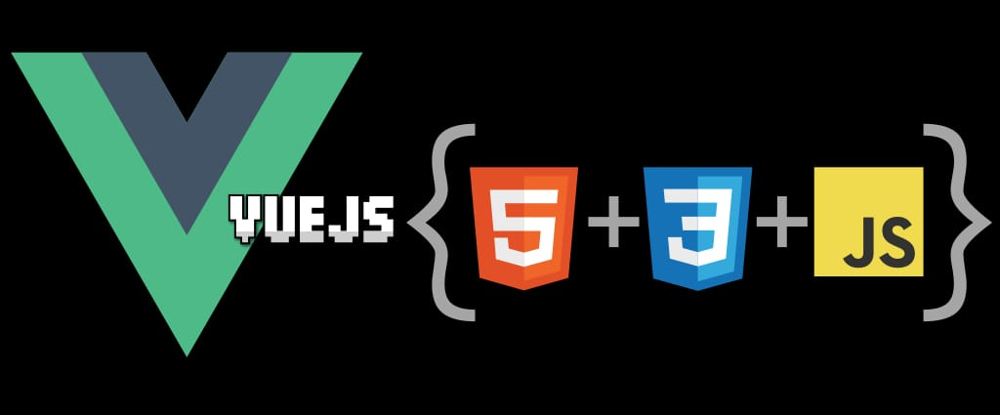

Framework
Un framework es una herramienta que proporciona una estructura base para desarrollar aplicaciones.
Permite ahorrar tiempo porque evita empezar desde cero en cada proyecto.
También ayuda a organizar el código de forma más clara y ordenada.
No es un lenguaje de programación, sino un conjunto de reglas y herramientas.
Vue
Vue es un framework de JavaScript que construye interfaces de usuario.
Se basa en HTML, CSS y JavaScript estándar y proporciona un modelo de programación
declarativo y basado en componentes que te ayuda a desarrollar de manera
eficiente interfaces de usuario de cualquier complejidad.

¿Cómo crear una aplicación Vue local?
Para crear una aplicación Vue en tu computadora se utiliza Node.js (programa que permite usar JavaScript fuera del navegador) y npm (gestor de paquetes).
Pasos:
1. Instalar Node.js desde su página oficial
2. Abrir la terminal o consola (lugar donde se escriben comandos)
3. Ejecutar: npm create vite@latest (crea el proyecto con una herramienta moderna)
4. Elegir Vue como framework (seleccionar la opción dentro del asistente)
5. Entrar a la carpeta del proyecto (usar cd nombre-del-proyecto)
6. Ejecutar: npm install (instala las dependencias, o sea, lo que el proyecto necesita)
7. Ejecutar: npm run dev (inicia un servidor de desarrollo)
Esto crea un servidor de desarrollo (una app que corre en tu compu) que permite ver la aplicación en el navegador, generalmente en localhost (tu propia computadora).
También se genera una estructura de archivos con carpetas como components (donde van los componentes) y archivos como main.js (archivo principal) y App.vue (componente principal).
En main.js se usa createApp (para crear la app) y mount (para conectarla al HTML).
Este método es local, lo que significa que Vue está instalado en el proyecto y no se usa desde un CDN (no depende de internet para cargarlo).
¿Qué son los componentes?
Los componentes nos permiten dividir la interfaz de usuario en piezas
independientes y reutilizables, y pensar en cada pieza de forma aislada.
¿Cómo se usan los componentes?
Para usar un componente hijo, necesitamos importarlo en el componente padre.
Suponiendo que colocamos nuestro componente contador dentro de un archivo llamado archivopadre.vue